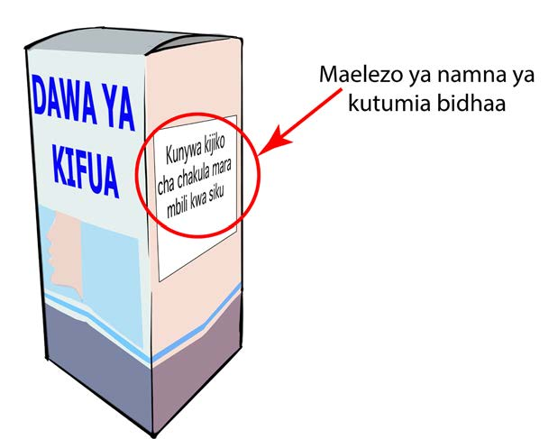
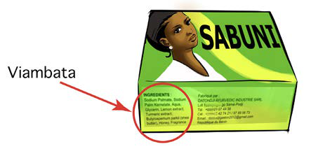

Kielelezo namba 18: Maelezo ya kutumia dawa
Viambata vilivyotumika kutengeneza bidhaa
Bidhaa hutengenezwa na viambata vya aina tofauti. Ni muhimu kuelewa viambata vilivyo katika bidhaa. Hii itasaidia kuepuka madhara ya kiafya kama vile mzio. Kielelezo namba 19 kinaonesha mfano wa viambata katika sabuni.

Kielelezo namba 19: Viambata katika sabuni
Namna ya kuhifadhi vitu
Utunzaji bora wa vitu husaidia kutunza afya. Kuzingatia kanuni na taarifa za utunzaji bora wa bidhaa ni muhimu ili kuepuka
SAYANSI DARASA LA IV KITABU CHA MWANAFUNZI.indd 23
17/09/2025 13:13